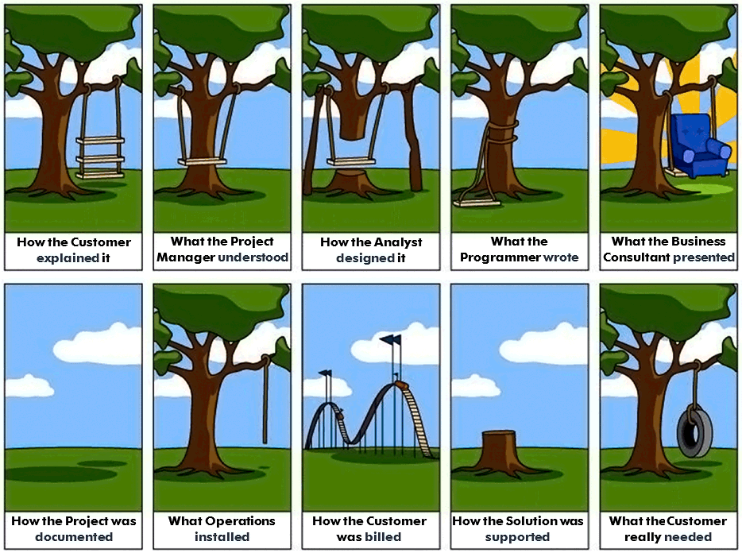
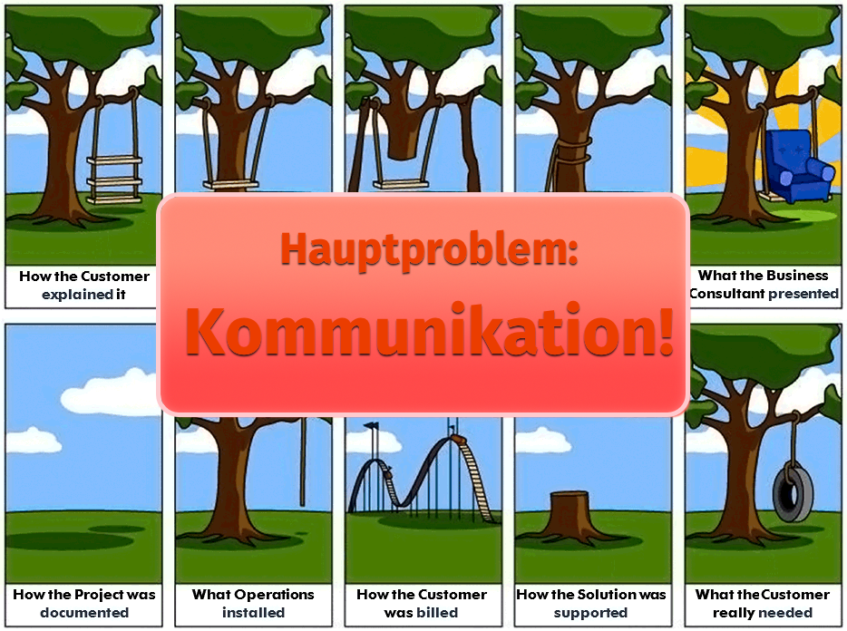
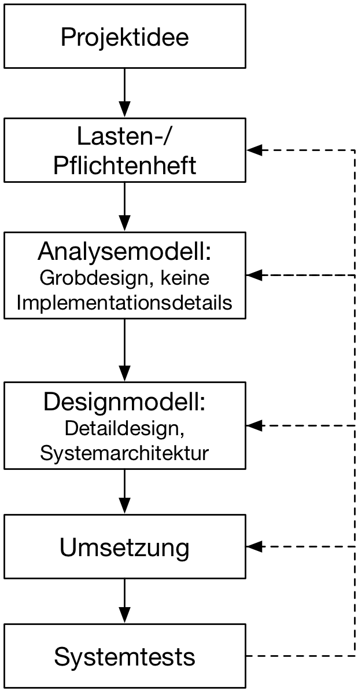
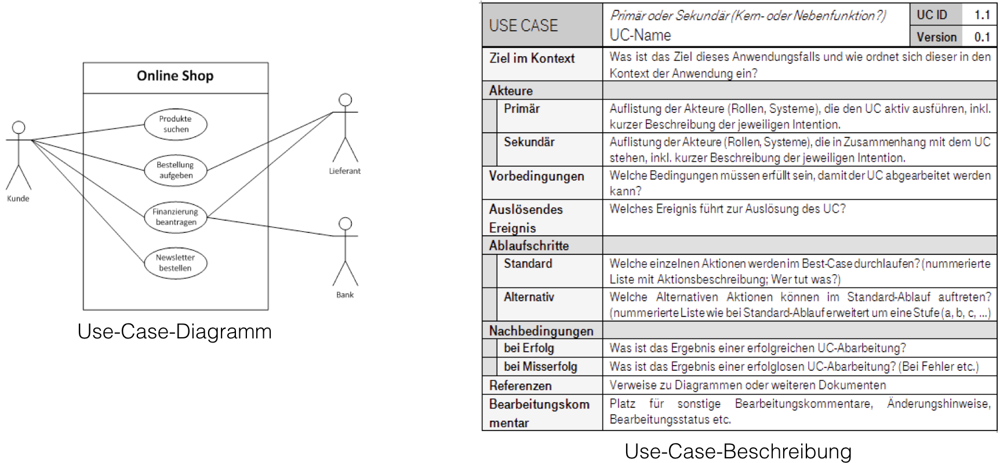
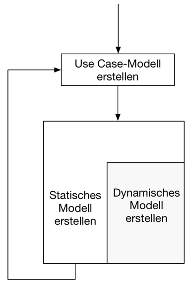

{% extends "../_base_template.html" %}
{% block title %}Lektion 2 - Einführung OOA / OOD{% endblock %}

{% block sections %}
<section data-markdown>
<textarea data-template>
<i class="fas fa-graduation-cap"></i> Thema: Einführung in OOA / OOD
=============================

Heutiges Ziel
-------------

* Sie kennen die Problematik beim Entwerfen / Entwickeln komplexer Systeme
* Sie wissen, was OOA / OOD bedeutet
* Sie können die Unterschiede von OOA und OOD erklären
* Sie wissen, was „statisches“ und „dynamisches“ Modell bedeutet

### Hausaufgaben

* Durchlesen Anforderungen Bibliothekssystem auf **Moodle**
* Ziel: Anforderungen verstehen, erste Ideen und Überblick sammeln: Wir verwenden die Erkenntnisse in der nächsten Lektion,
  um Use Cases daraus abzuleiten.

</textarea>
</section>

<section data-markdown data-separator-notes="^Note:">
<textarea data-template>
<i class="fas fa-comments"></i> Diskussion
===========

Vorgehen beim Entwerfen von Software
-------------------------------------

Szenario:
Sie haben mit einem Kunden ein erstes Treffen für die Entwicklung einer Software.
Seine erste Aussage lautet:

> „Wir brauchen eine App für die Erfassung von Neophyten im Feld. Wir möchten sie auf einer Karte erfassen und dann Bekämpfungsmassnahmen definieren und organisieren.<br/>Natürlich muss das auch ohne Netz funktionieren.“

* Wie gehen Sie vor? Welche Schritte führen Sie durch, bis der Kunde sein fertiges Produkt "in den Händen" hält?
* Welche Schwierigkeiten/Herausforderungen sehen Sie bei der Umsetzung einer solchen Anforderung?
  * welche Probleme entstehen beim **Kunden**?
  * welche Probleme haben  Sie als **Entwickler**?

<i class="fas fa-arrow-right"></i> Schreiben Sie Ihre Stichworte in folgendes Padlet und erläutern Sie diese:

* notwendige Schritte, Arbeiten bis zum fertigen Produkt
* Probleme auf Kunden- und Entwicklerseite

Padlet: https://padlet.com/alex_schenkel/ar4id4nnl693n6js

Note:
* Padlet bereitstellen: https://padlet.com/alex_schenkel/ar4id4nnl693n6js
* 2 Spalten:
  * Vorgehen
  * Schwierigkeiten / Herausforderungen
* Schüler erfassen Ideen auf Zettel, hängen diese an Tafel
* jeder Schüler sagt etwas dazu, wir diskutieren kurz darüber
</textarea>
</section>

<section>
    
</section>

<section>
    
</section>


<section data-markdown data-separator-notes="^Note:">
<textarea data-template>
<i class="fas fa-comments"></i> Kommunikationsprobleme
===========

* <!-- .element: class="fragment" --> Der <em>Kunde</em> versteht nicht genug von Informatik.
* <!-- .element: class="fragment" --> Der <em>Kunde</em> ist Experte in seiner Problem-Domäne. Er spricht eine Sprache, die der Informatiker nicht versteht.
* <!-- .element: class="fragment" --> Der <em>Informatiker</em> versteht nicht genug vom Problem des Kunden.
* <!-- .element: class="fragment" --> Der <em>Informatiker</em> ist Experte in der (Software)-Entwicklung. Er spricht eine Sprache, die der Kunde nicht versteht.


<i class="fas fa-arrow-right"></i> Ziel:

> Die beiden Welten müssen miteinander reden können, damit gemeinsam ein Produkt entwickelt werden kann!
> → Wir brauchen also Methoden, um die genauen Anforderungen formal herauszufinden, um daraus ein System zu entwickeln.

</textarea>
</section>

<section data-markdown data-separator-notes="^Note:">
<textarea data-template>
<i class="fas fa-comments"></i> Gemeinsame Kommunikation: UML!
===========

Wir müssen also 2 Welten zusammenbringen, so dass sie miteinander kommunizieren können. Ein wichties Werkzeug in der Objektorienterten Entwicklung ist dabei
UML (Unified Modelling Language).


Wir verwenden UML für unsere objektorienterte Analyse und Planung. UML bietet viele Vorteile:

* Es ist ein grafisches Werkzeug für komplexe Zusammenhänge.
* Die Diagramme können **sowohl von technischen wie nicht technisch orientierten Leuten verstanden werden**
* Die Sprache ist formal genug, um detaillierte Anforderungen und Umsetzungen darzustellen
* Es gibt viele Werkzeuge, welche UML beherrschen und aus den Diagrammen gleich Programmteile erzeugen können.

[Übersicht über alle UML-Diagramme auf Moodle](https://moodle.bztf.ch/mod/resource/view.php?id=50193)
</textarea>
</section>

<section data-markdown data-separator-notes="^Note:">
<textarea data-template>
<i class="fas fa-sitemap"></i> Vorgehensmodell
===========


<div style="margin-left: 280px">
<p>
Wir behandeln das Vorgehensmodell zur Entwicklung von objektorientierter Software.
Das hier aufgezeigte Vorgehensmodell ist grundsätzlich generisch und <strong>nicht nur</strong> Objektorientiert-spezifisch.
</p>
<p> Die objektorientierte Entwicklung oder Vorgehensweise orientiert sich stark an der realen Welt:</p>
<ul>
    <li class="fragment">Objekte mit Attributen und Operationen</li>
    <li class="fragment">Dies entspricht unserem "Mindset": Probleme können von uns so gut abstrahiert werden.</li>
    <li class="fragment">Da sich auch viele Programmiersprachen an diesem Paradigma orientieren, brauchen wir zur Analyse und Design unseres Systems ein objektorientiertes Vorgehensmodell.</li>
</ul>
</div>
</textarea>
</section>

<section data-markdown data-separator-notes="^Note:">
<textarea data-template>
<i class="fas fa-comments"></i> Phase: Objektorientierte Analyse (OOA)
===========

Ziel der Phase:

* Erfassen der Anforderungen an das zu entwickelnde System
* Implementations- und Umsetzungsdetails werden weggelassen
* Fakten sammeln, darstellen, überprüfen
* **Ergebnis: objektorientiertes Analysemodell: Klassen, Beziehungen, Abläufe, Szenarien**

**Frage:** Welches UML-Werkzeug eignet sich, um Anforderungen an die Software mit dem Kunden zu ermitteln / festzulegen?

<div class="fragment">
<strong>Antwort: </strong>
Use-Cases / Use Case Diagramme
</div>
</textarea>
</section>


<section data-markdown data-separator-notes="^Note:">
<textarea data-template>
<i class="fas fa-comments"></i> Objektorientierte Analyse mit Use Cases
===========

Als Diskussionsgrundlage dienen Use-Case-Diagramme
resp. Use-Case-Beschreibungen, welche das Problem losgelöst
von der Technik beschreiben. Sie helfen, das Problem formal zu erfassen, meist direkt mit dem Kunden zusammen.



</textarea>
</section>


<section data-markdown data-separator-notes="^Note:">
<textarea data-template>
<i class="fas fa-sitemap"></i> Vorgehenweise objektorientierte Analyse
===========

Aus den erstellten Use-Cases kann dann das **statische** und **dynamische** Modell abgebildet werden.

**WICHTIG**: das Analysemodell befasst sich **noch nicht** mit der technischen Umsetzung – Es wird bewusst auf technische Details oder Architekturen während der Analyse verzichtet.

<div style="display:flex">

<div>
<p>Diese Vorgehensweise ist:</p>
<ul>
    <li><strong>evolutionär</strong>: Das Gesamtsystem wird nicht von Anfang an als Ganzes umgesetzt, sondern es werden kleine Teilsysteme analysiert und umgesetzt (Bsp. Userverwaltung)
          und mit dem Kunden laufend besprochen.</li>
    <li>somit immer auch <strong>iterativ</strong>: Durch die evolutionäre Vorgehensweise ist es immer wieder notwendig, Änderungen und Verfeinerungen am Modell vorzunehmen.</li>
    <li>Da sich viele Programmiersprachen am OO-Paradigma orientieren, brauchen wir zur Analyse und Design unseres Systems ein objektorientiertes Vorgehensmodell.</li>
</ul>
</div>
</div>

**Frage:** Warum macht man dies so? (iterativ, evolutionär)? Warum entwickelt man das Gesamtsystem nicht „Auf einen Rutsch“?

<div class="fragment">
    <strong>Antwort:</strong> Anforderungen lassen sich schwer von Anfang an bis ins Detail formulieren:
    Meist entstehen die konkreten Anforderungen erst mit ersten Prototypen, während des Testens, oder sogar erst im Betrieb!
</div>
</textarea>
</section>


<section data-markdown data-separator-notes="^Note:">
<textarea data-template>
<i class="fas fa-sitemap"></i> Statisches Modell, dynamisches Modell
===========

<div style="display:flex">
<div style="border: 1px solid black;margin-right: 5px;padding: 5px">
    <p><strong>Statisches</strong> Modell:</p>
    <p>
    Das statische Modell zeigt die (Fach-)Klassen, deren Attribute und die Beziehungen zu anderen Klassen. Es sagt aber nichts über die Interaktion / über Abläufe aus.
    </p>
</div>
<div style="border: 1px solid black;padding: 5px">
    <p><strong>Dynamisches Modell</strong> Modell:</p>
    <p>
    Das dynamische Modell zeigt die Funktionsabläufe, also das Verhalten des Systems, und die Interaktion der einzelnen Klassen / Komponenten miteinander.
    </p>
</div>
</div>

<p style="margin-top: 1em">
    <i class="fas fa-flask"></i><strong>Übung</strong>: Sie ordnen verschiedene UML-Diagramme dem richtigen Modell zu (statisch oder dynamisch).
</p>

Padlet: https://padlet.com/alex_schenkel/bx6zzp6l7ckylem7

Machen Sie eine Aussage zu Ihrem Diagramm):

* Warum statisch, warum dynamisch?
* Für was wird dieses Diagramm benutzt?
* Können Sie solche Diagramme mit dem Endkunden besprechen?

Note:
* Die Schüler erhalten verschiedene UML-Diagramme auf Papier (Auf A4 vorbreiten)
* Sie teilen dies am Flipchart in die 2 Kategorien ein
* Sie erklären, warum sie die Einteilung so vorgenommen haben.
</textarea>
</section>


<section data-markdown data-separator-notes="^Note:">
<textarea data-template>
<i class="fas fa-sitemap"></i> Objektorientierte Design-Phase (OOD)
===========

Im Gegensatz zur Analyse-Phase werden in der **Design-Phase** die technischen Aspekte definiert.

Ziel der OOD-Phase:

* Entwerfen des detaillierten technischen Systems
* Festlegen der Systemarchitektur / Finden geeigneter Frameworks
* Erarbeitung der Systemklassen und -Attribute aufgrund der Fachklassen:
  Anders als im OOA-Modell können die hier definierten Klassen 1:1 im Code umgesetzt werden
* Finden von Implementierungslösungen mittels Design Patterns
* Definieren des UI, der Persistenzschicht und die Zusammenarbeit zwischen all diesen Schichten

Zur OOD-Phase kommen wir später im Verlauf des Semesters.
</textarea>
</section>

<section data-markdown data-separator-notes="^Note:">
<textarea data-template>
<i class="fas fa-tasks"></i> Hausaufgaben
===========

Übungsprojekt Bibliothekssystem: Als durchgängiges Beispiel werden wir aufgrund eines einfachen Pflichtenheftes ein Bibliothekssystem entwerfen.

* Lesen Sie die [ „Anforderung Bibliothekssystem“ (Moodle) ](https://moodle.bztf.ch/mod/resource/view.php?id=50190) durch.
* überlegen Sie sich, _unabhängig von der technischen Umsetzung_, welche Rollen (Personen) und Abläufe Sie im Pflichtenheft finden.
* Überlegen Sie sich, _unabhängig von der technischen Umsetzung_, wo Sie Unklarheiten / Ungenauigkeiten feststellen. Was ist Ihnen nicht klar? Wo sehen Sie genaueren Erklärungsbedarf?
* Ziel ist, in der nächsten Stunden einzelne Use-Cases erstellen / bearbeiten zu können.
</textarea>
</section>

{% endblock %}
